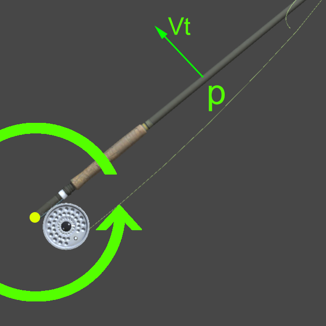

A little bit of Theory
Introduction
The casting with the fly rod is, from a physical point of view, a rather complex phenomenon. To reach a reasonable understanding it is necessary to divide it into simpler parts and then reassemble them according to the principle of superimposition of effects. Even before that, however, we get rid of some physical aspects which, although present, can be defined as of secondary importance with respect to the heart of the matter. In fact, we neglect the friction of the air which actually involves only a damping of the motion and the force of gravity which generates a vertical and constant component of the acceleration.
Coordinate System
Let's define the reference system used by eFly.
eFly uses a right-handed reference system.
First I suggest you go to Wikipedia what this means.
The eFly system has the X axis in the direction of the outgoing rod axis. The Y axis is up and the Z axis is right. The colored axes respectively are highlighted in the figure.
| Axis | Color |
|---|---|
| X | Red |
| Y | Green |
| Z | Blue |
Angles

Knowing the orientation of the axes is essential for knowing how to correctly interpret the values of the angles. But that is not all. In fact, we must also know the order in which the corners are composed. We first define the rotations with their respective names.
Front Angle
The first is the front angle. It defines the main rotation of the rod in over-head casting. As you can see in the figure, the rotation takes place around the Z axis and therefore on the plane defined by X and Y. The positive direction is that defined by the right hand rule and therefore with the rod that raises the tip upwards.
Side Angle
The second is the side angle. It defines the secondary rotation of the rod in over-head casting. As you can see in the figure, the rotation takes place around the Y axis and therefore on the plane defined by X and Z. The positive direction is that defined by the right hand rule and therefore with the rod that rotate counter-clockwise (right to left).
Pole Angle
The third is the pole angle. It defines the tertiary rotation of the rod in over-head casting. As you can see in the figure, the rotation takes place around the X axis and therefore on the plane defined by Y and Z. The positive direction is that defined by the right hand rule and therefore with the rod that rotate clockwise (left to right) about the rod axis.
Rotations
Each of the three angles of rotation expresses the rotation around its own reference axis according to the defined order. In our case the order is:
- Front (primary)
- Side (secondary)
- Pole (tertiary)
This means that from the original position one rotates to the primary angle, then to the secondary and finally to the tertiary.
CAUTION the rotation is not commutative so that the rotations are always performed in the established order.
Rod Mechanics
The main mechanical component of the cast is the rod. Over the years the elastic contribution of the rod to the generation of the launch thrust has generally been overestimated compared to that of the lever. The rod is a third type lever, which allows to amplify the speed generated by the rotation of the forearm, depending on its length.
Rod as Lever

Vt is greater the more the point p is distant from the center of rotation according to:
$$Vt = WR$$
Where W is the speed of rotation and R the distance from the center of rotation.
We note that the tangential velocity continuously changes direction during the cast, defining two components Vh and Vv respectively horizontal and vertical.
The maximum tangential speed is therefore obtained on the tip of the rod.
We note that the tangential velocity continuously changes direction during the cast, defining two components Vh and Vv respectively horizontal and vertical. When the rod is horizontal, the tangential velocity has only a vertical component. With the vertical rod, the speed has only a horizontal component.
According to the laws of ballistic kinematics, the condition of maximum range is used with a launch angle of 45 degrees, ie when the components Vh and Vv have the same value. This implies that, if the rod is considered as a simple third kind of lever, the management of the forces must be done in such a way as to obtain the maximum speed when the rod is at 45 degrees of front angle.
It is interesting to assimilate the lever behavior of the cast to that of the trebuchet.
In the trebuchet the load is at the end of a rope which is fixed on the tip of the rigid rod. The optimal launch angle depends a little on the geometry of the trebuchet, but it still remains in a neighborhood of 40 degrees.
Rod as Spring
The flexibility of the rod is a factor that anglers care a lot about. What is usually called action is actually nothing more than an elastic reaction to the dynamic stresses imparted by the fisherman and by the inertia of the masses. The elastic response of the rod should be interpreted as an accumulation of energy with delayed release. The rod, in the elastic response, has the same behavior as the mechanical spring for which Hooke's Law is valid.
$$F = kx$$
In practice, the elastic force is directly proportional to the imposed deformation. k is the elastic constant and expresses the stiffness of the stressed structure.
Hence stiffer rods have a larger k value. This implies that with the same force F, the deformation is smaller. The law responds in a very simple and intuitive way to what we can expect.
The fishing rod can be assimilated to a wedged elastic beam subject to vertical load on the free end. The load is generated, in our case, by the inertial reaction of the fly line to the loading due to the rotation in the back cast. The elastic beam is deformed so as to create a rotation ##B## of the rod tip with the opposite sign to that due to the back cast.
Lever and spring: how they work together
Let's look at the back-cast loading phase. Suppose the start corresponds with the horizontal position of the rod. At that moment the front rotation begins to bring the rod towards the vertical position.
The tip of the rod thus has a rotation A equal to the front angle A0 decreased by the B angle.
The flexibility of the rod is a consequence of the increase in angle B and therefore of the decrease in angle A. The angle A0 describes the slope of the rod grip. The angle A describes the inclination of the tip which directly determines the launch angle. Remember that the optimal angle is 45 degrees: the flexibility of the rod delays the achievement of this value during the back cast movement. The extent of the rod deflection depends on the rod stiffness, the rotation speed of the casting action and the weight of the line. The change in the trajectory of the line and therefore the casting depend on the variation of the momentum of the line itself. the momentum is given by the product of the mass of the line multiplied by its speed. So casting speed and line weight are closely connected and antagonistic to each other. As speed increases, the weight of the line must decrease and vice versa. For short and precise casts, the stiffness of the rod is reduced so as not to increase the weight of the line.
The fly rod, as built, behaves like a simple angular velocity amplifier. A small rotation of the wrist causes a large displacement of the tip. At the same time it behaves like an intelligent spring, which flattens the trajectory under load, facilitating the formation of the loop. In addition to this, however, it also performs the other fundamental function of accumulating the energy that is released when the line is released. This excellent configuration enables the caster to deliver between 20% to 80% of used energy into the fly-line, depending on conditions.
The Spring-Marble model
The rod is represented by a spring and the line by a marble.
The caster pushes on the spring, which in turn pushes on the marble on a flat surface, along a straight line (simplifying assumptions).
Thus the lever function of the rod is discounted but it can be reintroduced at a later stage (lever arm effect).
The caster accelerates and decelerates the spring motion to a stop; the spring is temporarily compressed and launches the marble at some time as it unloads.
Rod Action
Primarily a fly rod is a lever that is tapered for practical reasons. Essentially, it is a simple speed amplifier, using rotation in a limited space but at a cost; kinetic energy has to be put into the lever, which is then wasted during the stop at the end of the cast.
The action of a fly rod is independent of its material of construction. Consequently, contrary to popular belief, the term, “fast action bamboo rod,” is not an oxymoron. The action of a fly rod depends upon its method of construction - its taper - the relative strengths of the butt, middle, and tip regions of the rod blank. Currently, action is described in terms of the flexing of these rod regions. A simple way of simulating these actions is to use a common playing card. Grasp the card successively near the bottom, in the middle, and near the top, and flex the top of the card with your thumb. This simulates progressively increasing the rod strength from the butt upwards. When held closest to the bottom, the least force will be required to flex the card; the card snaps back slower; and the sound produced on releasing it will be of a lower tone. Holding the card progressively towards the top, the force required to bend it increases; the speed of the snap-back is faster; and the pitch of the sound on release rises. If significant flexing occurs all the way through the butt region, a rod’s action is considered slow. If flexing occurs down to the middle region, the rod action is considered moderate. If flexing occurs primarily in the upper third, the rod action is considered moderate/fast; and if flexing occurs primarily in the upper quarter, the rod action is considered fast. These situations are often illustrated by figures similarnext. In this scheme, the operative word is primarily, as some diagrams do acknowledge the lower sections also flex to some degree, and as more and more load is applied, even a fast action rod will begin to flex more deeply into the mid and butt areas.
ORVIS Flex Index
Recognizing an advantage to be gained by a numerical characterization of rod action, Orvis introduced their proprietary Flex Index concept. Their diagram, similar to previous figure, consists of three tree-like figures representing Full, Mid, and Tip Flex. The numerical scale at the bottom is linear and can be related to the straight boundary line designating the points where flex begins. (From this, Orvis can calculate the Flex Index by first determining the % of length of the rod which does not flex [e.g., 29%], multiplying that value by the arbitrary slope factor [0.224] and rounding off to the nearest 0.5 value (e.g., 29 x 0.224=6.496=6.5.) Orvis boasts of having spent two years and making thousands of measurements using electronic load cells to develop this numerical measurement. Actually, it is amazing they developed any numerical measurement at all. A single point where a straight rod begins to flex does not exist. ref.William Hanneman
Action Angle
The Action Angle (AA) is a concept developed in the “Common Cents Approach to Characterizing Fly Rods,” which will be thoroughly explained shortly. It is based on the following: If one positions a rod in a horizontal position and, by adding weight, deflects the tip downwards, the the non-flexing tip top on the rod forms an angle which increases from zero towards 90 degrees. If one standardizes the deflection to equal one third of the rod’s length, the angle formed by the tip top will have the following relationship to rod action.
| Action Angle [deg] | Rod Action |
|---|---|
| below 59 | Slow |
| 59-63 | Moderate |
| 63-66 | Moderate/Fast |
| abobe 66 | Fast |
Rod Power
The power of commercial fly rods and blanks is designated relative to AFTMALine Numbers which increase directly with the weight of the lines.
So too does the force (weight) required to fully load the rods corresponding to these lines.
(By definition, a fully loaded rod has had its tip deflected a distance equal to one third of its length.)
This weight is defined as the Intrinsic Power (IP) of that rod, and one can relate the IP to the weight of the line (30 ft.) which will fully load that rod.
To standardize the definitions introduced so far, Dr. Hanneman has proposed a procedure called "The Common cents System" which is relatively easy to implement in practice.
The rod is arranged horizontally by applying an increasing weight on the tip (he proposes 1 cent dollar coins) until the punt is lowered by 1/3 of the length of the rod. At that moment, the inclination of the summit is measured in degrees with a protractor.
With these values you enter a table from which the searched index is retrieved. For those interested, the reference link has been included in this document.
Line path
We can represent the path of the fly line as the set of successive positions assumed by the center of gravity of the line in flight. The center of gravity of the line in flight varies according to the type of line (DT, FW etc.) and the quantity of line outside the rod. The position of the center of gravity of the line is lowered by the weight of the line itself.
In the illustration the path of the center of gravity of the line is represented in green. The yellow arrows represent the ideal launch direction. The launch takes place at 40 degrees, the center of gravity of the tail, which passes late and is subject to the weight of the tail itself, generates a more horizontal path. Theoretically, the optimal direction of passage of the line is 16 degrees. The tip of the line makes a much tighter trajectory. The leader even more. From a mechanical point of view, the center of gravity of the line must be considered as the engine of the cast.
About back cast
The simple ballistic physical considerations we introduced suggest looking for the optimal back launch angle 45 degrees. The rod at maximum load must assume this value at the points where the angler is able to reach maximum speed. The biomechanical analyzes carried out identify the back angle at which the fisherman is able to reach the maximum rotation speed at 70 degrees. To get a great deal in the forward cast it is necessary to give the tail maximum kinetic energy.
The backward cast serves to accumulate potential energy which, in the forward angle, is transformed into kinetic energy. The energy accumulated in the back cast is the greater the greater the mass and the speed. The mass depends on the weight of the line and the amount of line outside the rod. However, the influence of mass is much less than the influence of velocity. In the kinetic energy formula $$ E_c = 1/2 m v ^ 2 $$ the velocity contributes exponentially. By doubling the speed, the kinetic energy quadruples; tripling, the energy becomes nine times greater. A large kinetic energy in the back cast with a launch angle close to 45 degrees, brings the tail as far as possible, taut and charged in the back-cast apex position.
Towards the cast apex
The kinetic energy acquired in the back cast, as the line extends backwards, tends to be transformed into potential energy according to the Lagrangian equation
$$L(Q,q) = 1/2m(QQ)-U(q)$$
The potential energy depends on the altitude at which the line reaches. In the extreme case where the line altitude is at the level of the angler's arm, the potential energy is zero. If it is below it becomes even negative. The higher the tail at the apex, the greater the potential energy that can be transformed into kinetic energy during the forward cast. For this reason it would be preferable to talk about up-cast rather than back-cast.
Before the line stops at the apex the forward movement must already be formed and active. This is for several reasons. The first is that the line, on the back, must not remain stationary in the air and be subject only to gravity. In fact, being stationary, it has no momentum and is therefore passive to the perturbing action of the wind which alters its geometric arrangement damagingly.
The second is that part of the dynamic tension of the back must be used to load the rod for the execution of the down. As you can guess once again, the angle at which the rod has to act on the line is 45 degrees. For this to happen the optimum angle for maximum arm speed is still 70 degrees but obtained starting from the apex position of 110 degrees.
Down to the target
The action of the cast must be as continuous and fluid as possible. Back cast, transition and fore cast must follow each other in a harmonic sequence in order to allow the transition of forces and inertias without loss of energy. The advantage lies not only in optimizing the distance but also in creating maximum control of the fly pose.
Even in the forward cast the optimal launch angle follows the same principle as the back cast. The line achieves maximum range if it is cast at an angle between 40 and 45 degrees. This means that compared to the start we are about 150 degrees. Now let's try to deepen the reasoning in order to understand also how fundamental the choice of the stiffness of the rod and the relationship between the stiffness of the rod and the weight of the line is.
The figure shows three different flexures of the rod in the moment of maximum load in the forward cast. Recall that the optimal direction of launch is 40 degrees and that the optimal biomechanical angle is 70 degrees. This means that the optimal bending of the rod is the one that simultaneously satisfies both conditions. The red line is characterized by a flexion less than optimal with a front angle of 90 degrees: rod too stiff. The blue moon, on the other hand, is related to an excessive curvature with a front angle of 50 degrees: the rod is too flexible. The correct curvature is represented by the green curve. The front angle is the optimal one of 70 degrees. The stiffness of the rod is balanced with the mass of the line.